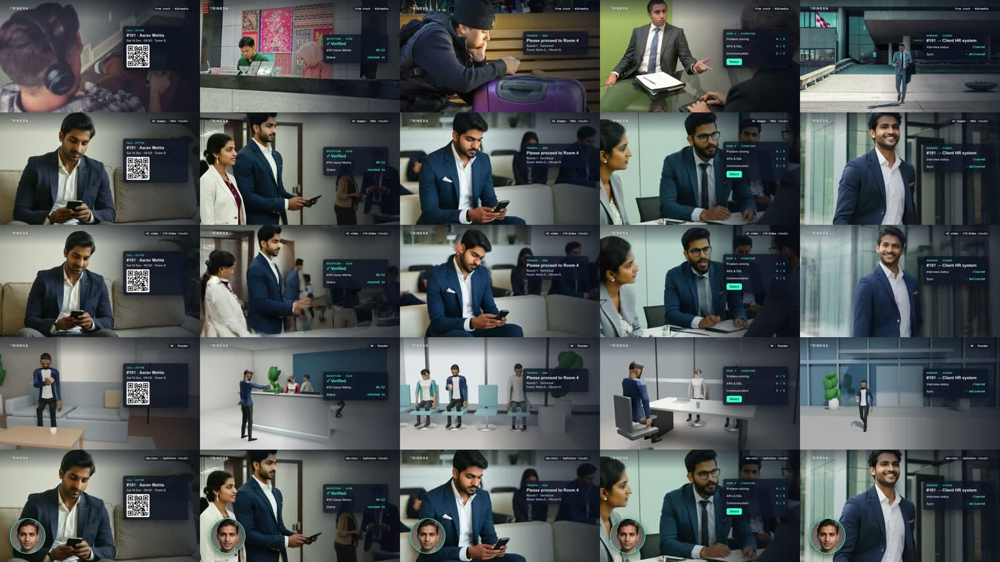
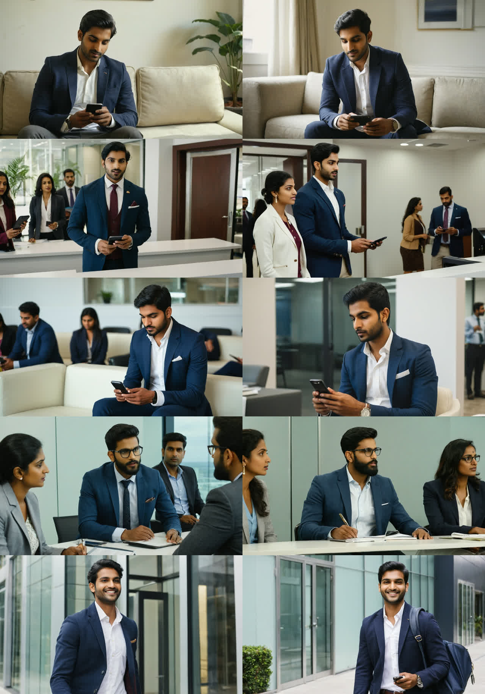

Real-looking people in a product video, for $0, on a MacBook: I tested 5 methods
My explainer videos had great app screens and no humans. So I made the same 30-second story five different ways, entirely on my laptop with free tools, and timed everything.

The setup
The story is simple: Aarav gets a QR call letter for a walk-in interview, gets scanned at reception, waits in a lounge until his phone buzzes, does the interview, and his record is handed off to the company's HR system. That's five shots and 30.4 seconds, one narrator voice (Kokoro TTS, local), and the same app overlays in every version.
Only one thing changes between the five videos: how the people are made. That keeps the comparison fair.
The machine was a MacBook Pro with an M1 Max (10-core CPU, 32-core GPU, 64 GB of unified memory). There's no NVIDIA card, so "GPU" here means Apple's GPU through PyTorch's mps backend and Blender's Metal renderer. Other apps (an IDE and a VM) stayed open, as on a normal workday, and that turned out to matter.
The five results
1 · Free stock photos
Wikimedia Commons + Openverse. Real people, but a different person in every shot.
2 · AI images (SDXL) best value
RealVisXL V4 on the Mac GPU. Realistic and the same Aarav throughout.
3 · AI video (LTX-Video)
The SDXL stills animated image-to-video. People really move, but it's slow and fragile.
4 · Blender 3D
Free CC0 rigged characters on scripted sets. Fully controllable, but game-style.
5 · Talking narrator (SadTalker)
An AI presenter face lip-synced to the narration, shown as a corner bubble.
Scorecard
I scored each method 1–5 after looking at every shot.
| Stock | AI images | AI video | Blender | Narrator | |
|---|---|---|---|---|---|
| Realism | 5 | 4 | 4 | 2 | 3 |
| Same character throughout | 1 | 4 | 4 | 5 | 5 |
| People actually move | 1 | 1 | 4 | 3 | 2 |
| Matches the storyboard | 2 | 4 | 3 | 4 | n/a |
| Speed | 4 | 4 | 1 | 3 | 2 |
| Reliability | 4 | 5 | 2 | 4 | 3 |
| Licence clarity | 3 | 4 | 3 | 5 | 4 |
| Average | 2.9 | 3.7 | 3.0 | 3.7 | 3.2 |
What each method was really like
1. Free stock: real, but it can't tell your story
I expected stock to win on realism, and in a sense it did: these are real photos. But Wikimedia Commons has almost no usable free video of offices, receptions or interviews; what exists is under 720p or is news footage. So all five shots ended up as photos with a slow camera push. Worse, it's a different person in every shot, and one "office lounge" is a bus terminal. Pexels has better free video, but it needs an API key.
2. AI images with SDXL: the sweet spot
I wrote one fixed description of Aarav (age, hair, navy blazer, white shirt), fixed the random seeds, and generated two options per shot with RealVisXL V4. Each 1344×768 image took a steady ~2 minutes on the M1 Max GPU. The results look like candid office photos, and Aarav is recognisably the same person in most shots.

The flaw is identity drift in busy scenes: in the interview, Aarav suddenly has glasses and a beard. Prompts are also followed loosely; there is no receptionist actually scanning his phone.
3. AI video with LTX-Video: magic, then melting
I fed the SDXL stills to LTX-Video 0.9.5 (2B) for image-to-video. When the scene is one person making small movements, it's genuinely impressive: Aarav smiles at his phone, and in the interview he talks and gestures while the panel listens.
Crowds and big motion break it. The busy reception melts into a blur of bodies after about three seconds, and walking out of the building warps his body.
I rescued those two clips by keeping only the clean first ~3 seconds and playing them forward then backward. The raw clips are in the repo, so you can judge for yourself.
4. Blender 3D: total control, zero realism
Using free CC0 rigged characters (Quaternius) on sets built from primitives, every shot does exactly what the storyboard asks: he holds the phone to the scanner, the phone buzzes, he walks out. It's consistent and animated, but it looks like a video game. The free, no-login ways to get realistic 3D humans are effectively gone: Mixamo needs an Adobe login, and MetaHuman and Character Creator aren't free.
5. SadTalker narrator: a good guide, not a lead
I generated a fictional presenter face with SDXL and lip-synced it to the full narration with SadTalker. The sync is frame-accurate over all 30 seconds, but only the head moves, and at 512×512 it only works as a small bubble. One lesson: my first presenter was a woman, which looked wrong against the male voice, so match the face to the voice.
Where the time actually went
| Step | Runs on | Time |
|---|---|---|
| SDXL image, 1344×768, 30 steps | GPU | ~2 min each |
| LTX-Video, generating a 5s clip | GPU | ~30 s |
| LTX-Video, decoding that clip + memory swap | GPU + swap | 11–26 min |
| Blender, 878 frames at 1080p | GPU (Metal) | 14 min |
| SadTalker lip-sync | CPU → GPU after a patch | ~2.5 h projected → 12 min |
| GFPGAN face clean-up, 760 frames | CPU (no Apple GPU support) | 39 min |
| Assembling each 30s video (HyperFrames) | CPU | ~1 min |
Things that broke (so they don't break for you)
- No bf16 on an M1. LTX-Video's documented bf16 path crashed with a dtype mismatch. Run it in fp32 instead, which costs about twice the memory.
- CPU random generator on an MPS pipeline crashed the decode step. Use
torch.Generator('mps'). - SadTalker on the Apple GPU. Its pinned PyTorch 2.1 has no Conv3D on MPS. Upgrading to 2.5.1 and patching three files made it 13× faster; the patch is in the repo.
- Downloads. The models total about 28 GB. At 1 MB/s that's an afternoon, so download them in parallel. A bf16 copy of T5 (9.5 GB) halves the biggest file.
- Homebrew's Blender cask wanted sudo. The DMG from blender.org copied into
~/Applicationsworks without it.
What I'd actually use
- AI images (SDXL) for most character shots: realistic, consistent, and about 2 minutes per shot.
- AI video for 2–3 hero moments only, with one person and small motion. Generate a few seeds and keep the clean seconds.
- Keep the product UI as designed screens. The people provide context; the product is the star.
- A narrator bubble for the intro or outro, if you want a face.
Total cost: $0. Every model and tool here is free and ran on one laptop. The trade-off is time and about 28 GB of disk.
Everything is open: inputs, outputs, scripts, raw logs, every measured number, and a live side-by-side dashboard.